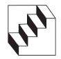
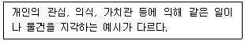
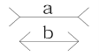
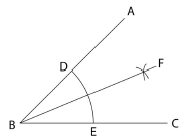
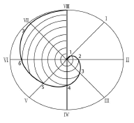
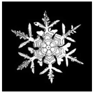
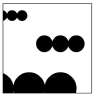
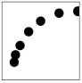
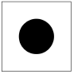
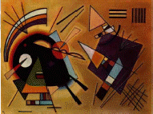

시각디자인기사 (2020-06-06 기출문제)
1과목: 시각디자인론
1. 디자인의 발전을 위하여 기업차원에서 채택하여야 할 행동으로 적합하지 않는 것은?
- 경영자의 디자인에 대한 인식을 높일 필요가 있다.
- 기업 내의 독립된 디자인 매니저의 역할이 필요하다.
- 디자인의 경험이 없는 중소기업을 대상으로 전문 디자이너를 만날 수 있는 지원제도가 필요하다.
- 기업 디자인 의식을 대표하는 기업 심벌마크를 외국의 스타일로 재구성한다.
(정답률: 85%)

2. 알렉산더 칼더의 모빌처럼 작품 자체가 움직이거나 움직이는 부분을 포함하는 것은?
- 키넥트 아트
- 옵아트
- 팝아트
- 미니멀 아트
(정답률: 74%)
3. 1932년 스탠리 모리슨에 의해 디자인된 대표적인 세리프 서체는?
- 푸트라(Futura)
- 가라몬드(Garamond)
- 타임즈 로만(Times Roman)
- 보도니(Bodoni)
(정답률: 70%)
4. 아이디어 발상 과정에서 발상력을 강화할 수 있는 태도가 아닌 것은?
- 평소와 다른 관점과 거리에서 본다.
- 문제해결을 위한 주제와 행동의 목적을 충분히 생각한다.
- 아이디어의 힌트가 될 만한 것이 있는지를 주변에서 찾아본다.
- 문제가 주어졌을 때 일정한 패턴으로 반응을 보인다.
(정답률: 87%)
5. 그로피우스에 의해 1919년 독일 바이마르에서 시작되어 디자인, 건축, 공예기술을 연수하기 위한 조형학교인 바우하우스와 직접적으로 관계된 인물이 아닌 것은?
- 칸딘스키(Wassily Kandinssky)
- 클레(Paul Klee)
- 달리(Salvador Dali)
- 모흘리 나기(Lazio Moholy Nagy)
(정답률: 47%)
6. 마케팅에 대한 설명으로 옳은 것은?
- 마케팅은 고객의 필요에 초점을 두어야 하며 그 필요, 충족을 통해 이익과 연결되지 않아도 좋다.
- 마케팅 시스템의 목표는 소비의 극소화, 소비자 만족의 극소화, 선택의 극소화, 생활의 질을 극소화하는데 있다.
- 마케팅 믹스의 구성요소(J.E.McCarthy 교수의 4P'S)는 Product, Price, Promotion, Planning이다.
- 마케팅 관리의 과정은 마케팅 수립과정의 조직화 → 시장조사분석 → 표적사항의 선정 → 마케팅 믹스의 개발 → 마케팅 노력의 관리를 말한다.
(정답률: 52%)
7. 실용신안등록 출원서에 기재해야 할 사항이 아닌 것은?
- 고안의 명칭
- 고안의 간단한 설명
- 도면의 간단한 설명
- 시용신안등록 청구범위
(정답률: 39%)
8. 아이디어 전개법과 그 설명이 틀린 것은?
- 특성열거법 : 사물을 구성하고 있는 요소, 부분, 성질 기능의 특성을 열거해 나가면서 아이디어를 찾는 방법
- 결점 열거법 : 기존 제품의 결점 발견에서 시작하여 상품들을 개량, 개선하는 방법
- 입출력법 : 윌리엄 모리스의 연구 노력에 의해 창안된 집단 Idea 발상법으로, 서로 다르고 관련이 없어 보이는 요소를 2개 이상의 것을 결합하거나 합성하는 방법
- 초점법 : 입력의 시작점에서 출력의 도달점을 정하지 않고, 도달점만을 정해 사용하는 방법
(정답률: 52%)
9. 천박하며 저속한 모조품, 대량생산된 싸구려 상품이 마치 훌륭한 진품인 것처럼 스스로를 기만하는 현상을 의미하며, 통속적인 디자인과 그러한 유형을 일컫는 것은?
- 멤피스(Memphis)
- 아르누보(Art Nouveau)
- 포스트모더니즘(Postmodernism)
- 키치(Kitsch)
(정답률: 69%)
10. 커뮤니케이션 기능을 전제로 목적성을 가지고 시각화한 그림으로 상징적, 풍자적, 해학적 또는 설명적으로 가시화시켜 표현하는 것은?
- 레터링
- 타이포그래피
- 일러스트레이션
- 에디토리얼 디자인
(정답률: 68%)
11. 실용신안법의 설명으로 틀린 것은?
- 실용신안등록출원서에는 반드시 도민이 첨부되어야 한다.
- 실용신안권의 존속기간은 실용신안등록출원일 후 10년이 되는 날까지 사용한다.
- 5년의 기간 내에서 존속기간을 연장할 수 있다.
- 비교적 기술진보 속도가 빠른 기술 분야에서 실용신안출원이 많다.
(정답률: 43%)
12. 아이디어 발상법 중 고든법의 진행방법의 내용이 아닌 것은?
- 전문지식을 가진 사람, 다양한 분야의 창조적 능력을 가진 사람을 별도의 팀으로 구성한다.
- 리더만이 해결해야 할 문제를 알아야 하먀, 좋은 아이디어로 수렴될 때까지 그룹 멤버에게 알리지 않는다.
- 리더는 발상의 방향을 제시하여 자유롭게 발언도록 한다.
- 아이디어가 나오기 시작하면 리더는 문제에 대해 구체적인 실현 가능성을 논의하고 아이디어를 유용한 것으로형성해 간다.
(정답률: 28%)
13. 상표법에 관한 설명으로 틀린 것은?
- 상표사용자의 업무상의 신용유지를 도모하여 산업발전에 이바지함과 아울러 수요자의 이익을 보호함을 목적으로 한다.
- 동일 또는 유사한 상품에 다른 날에 2건 이상의 상표등록출원이 있는 때에는 먼저 출원인의 협의에 의하여 정해진 하나의 출원인만이 그 상표에 관하여 상표등록을 받을 수 있다.
- 같은 날에 2건 이상의 상표등록출원이 잇는 때에는 출원인의 협의에 의하여 정해진 하나의 출원인만이 그 상표에 관하여 상표등록을 받을 수 있다.
- 협의가 성립되지 않거나 협의를 할 수 없는 때에는 심의위원회에서 결정된 하나의 출원인만이 상표등록을 받을수 있다.
(정답률: 31%)
14. 대비(Contrast)에 대한 설명으로 가장 거리가 먼 것은?
- 두 개 이상의 시각요소의 통합을 기본으로 한다.
- 성질을 달리하는 두 개 이상의 시각요소가 접근하여 나타나는 현상이다.
- 대비는 상대방의 반사성질에 의해 주체의 특성을 더욱 명확히 한다.
- 각각의 고유 성질을 더욱 강조한다.
(정답률: 58%)
15. 디자인 비즈니스의 스킬 중 제안서(Proposal)의 구성에 적절치 않은 것은?
- 전달력을 고려해야 한다.
- 기획내용을 충실히 한다.
- 이해하기 쉬워야 한다.
- 많은 정보를 제시한다.
(정답률: 79%)
16. 디자인의 정량적 평가와 거리가 먼 것은?
- 가설검증
- 통제된 측정에 의한 평가
- 객관적 추론
- 동기 중시
(정답률: 50%)
17. 환경오염을 막기 위한 포장방법으로 적합하지 않는 것은?
- 라미네이팅 대신 수성 코팅을 이용한다.
- 단일포장 내의 포장재질을 다양하게 혼용한다.
- 과잉과대 포장을 하지 않는다.
- 발포폴리스티렌계 포장재를 사용하지 않는다.
(정답률: 83%)
18. 독이성(Readability)의 설명으로 틀린 것은?
- 단어의 길이와 평이성, 문장의 길이, 문장에 포함된 종속절의 개수, 문장에 포함된 음절의 개수 등 여러 가지 요인에 의해 결정된다.
- 불필요한 단어와 구두점은 생략하여 독이성을 높이고,이 과정에서 단어의 의미와 명료성을 해치지 않도록 주의한다.
- 약어, 전문 용어, 번역되지 않는 외국어 인용을 주로 사용한다.
- 의사를 전달하고 싶은 목표 대상에 맞춰 문장의 길이를 조정한다.
(정답률: 71%)
19. 슬로건을 써서 개시하거나 사람들이 들고 이동하는 조형적 선전매체는?
- Hanger
- Mobile
- Placard
- Sample case
(정답률: 69%)
20. 아래 그림은 상표법상 어느 상표의 개념에 해당하는가?
- 업무표장
- 서비스표
- 증명표장
- 지리적 표시 단체표장
(정답률: 63%)
2과목: 조형심리학
21. 인간이 갖는 미의식의 특성에 해당되지 않는 것은?
- 미의식은 그 활동형식에서 수동적이고 수용적인 '미적향수'(감상)와 능동적이고 생산적인 '예술창작'의 두 측면으로 나뉜다.
- 미의식을 구성하는 심적 요소로는 감각, 표상, 연상, 상상, 사유, 의지, 감정 등이 있는데,요컨대 미의식은 이러한 요소들의 복합체이다.
- 어떤 사물이나 대상을 미의식으로 바라보거나 관계할 때 그 대상은 미적, 대상으로 성립한다.
- 미의식은 예술문화 혹은 디자인문화 영역에서만 자리하며, 따라서 일상적인 세계와는 일정한 거리를 갖는다.
(정답률: 75%)
22. 미적 경험의 기본적인 계기가 되면서 자아의 내면으로부터 촉발되고 형성되는 마음의 주된 작용은?
- 윤리적 성찰
- 미적 감정
- 합리적 판단
- 과학적 인식
(정답률: 72%)
23. 시각표현요소를 중첩(Overlapping)했을 때 가질 수 있는 이점은?
- 상호 수정과 간섭이 일어나기 때문에 각각 독립적으로 보여 진다.
- 보다 통일된 패턴 안에서 집중됨으로써 그 형태 관계를강하게 만든다.
- 하나의 같은 시각 단위 안에서 일어나기 때문에 단조로운 느낌을 만든다.
- 중첩으로 표현되었다 하더라도 대상들의 평등관계는 유지된다.
(정답률: 55%)
24. 다음의 도형에서 느껴지는 착시는?

- 대비의 착시
- 분할의 착시
- 수직수평의 착시
- 반전실체의 착시
(정답률: 44%)
25. 다음과 관련 있는 것은?

- 정신적 조절성
- 주관적 개인성
- 객관적 판단성
- 물리적 활동성
(정답률: 69%)
26. 그림에 대한 설명으로 틀린 것은?

- 선분에서 일어나는 시각의 착시현상이다.
- 화살표 끝의 방위 때문에 일어나는 착시이다.
- 수평의 부분 a와 b중에서 a가 길어 보인다.
- 헤링과 분트의 방향착시의 예이다.
(정답률: 58%)
27. 디자인의 요소에 해당되지 않는 것은?
- Shape
- Color
- Texture
- Union
(정답률: 66%)
28. 각의 2등분 작도법에 관한 설명 중 틀린 것은?

- ∠ABC의 꼭지점 B를 중심으로 임의의 원호 F를 그린다.
- D와 E를 중심으로 원호의 교점 F를 구한다.
- B와 교점 F를 통과하는 직선을 그리면 ∠ABC는 2등분 된다.
- ∠ABF = ∠CBF = 1/2∠ABC이다.
(정답률: 54%)
29. 다음 곡선을 무엇이라 하는가?

- 사이클로이드 곡선
- 고·저 트로코이드 곡선
- 아르키메데스 와선
- 인벌류우트 곡선
(정답률: 46%)
30. 다음 그림은 눈의 결정체이다. 해당되는 시각적 조직의 범위는?

- 방사적 조직
- 직선적 조직
- 군생적 조직
- 그리드 조직
(정답률: 68%)
31. 어떤 사물이 주변 여건이나 환경이 바뀌어도 그 사물에 대한 고정적인 인식을 하고 그대로 지각하고 있는 현상은?
- 지각의 동질성
- 지각의 항상성
- 지각의 점신성
- 지각의 착오성
(정답률: 68%)
32. '공간감'이 표현된 그림은 무엇인가?



(정답률: 62%)
33. 아래 그림의 작도법은?(복원 오류로 그림이 없습니다. 정확한 그림 내용을 아시는 분께서는 오류 신고를 통하여 내용작성 부탁드립니다. 정답은 1번입니다.)
- 원주 밖의 1점에서 원에 접선 그리기
- 두 개의 곡선에 접하는 타원 그리기
- 원의 중심구하기
- 원주와 같은 길이의 직선 그리기
(정답률: 64%)
34. 우리의 인식에는 감각능력, 상상력, 통찰력, 허구를 만들어 내는 능력이 있다. 이러한 능력을 포괄하는 핵심이 되는 것은?
- 지성
- 이성
- 감성
- 이상
(정답률: 49%)
35. 디자인의 의의를 설명하는 것으로 적합하지 않는 것은?
- 디자인(Design)이라는 말은 '지시하다', '표시하다'라는 의미의 라틴어 데시그나레 (Designare)에서 유래되었다.
- 디자인이란 용어가 나타나 일반인들에게 쓰이게 된 것은 서양은 르네상스 이후부터라고 보고 있으며, 이는 시대나 나라에 따라 약간의 차이가 있다.
- 오늘날의 디자인 개념은 산업혁명이 일어났던 시점에서 출발한다고 본다.
- 우리나라에서는 1900년대에 상업 디자인, 시각 디자인, 공업 디자인, 환경 디자인, 공예 디자인, 제품 디자인 등으로 구분되기 시작했다.
(정답률: 46%)
36. 리듬(Rhythm)과 관련이 없는 것은?
- 반복
- 점이
- 대칭
- 방사
(정답률: 52%)
37. 플라톤 입체(Platonic solids)의 5가지 다면체와 관련 없는 것은?
- 정4면체
- 정6면체
- 정10면체
- 정20면체
(정답률: 34%)
38. 미학은 감성적 인식에 관한 학문이다. 미적가치에 관한 설명과 거리가 먼 것은?
- 미적 특성이라고도 부른다.
- 매력적인 것, 우아한 것, 고상한 것 등을 말한다.
- 인간의 실제적 행위에 의해 창조되고 예술 속에 반영되어 진다.
- 인간에 의해 주위에서 발견되어질 수 없는 특성을 갖고 있다.
(정답률: 69%)
39. 시각적 질감에 대한 설명으로 틀린 것은?
- 2차원적으로 느낄 수 있는 질감이다.
- 빛과 그림자, 색채에 의해 질감을 만들 수 있다.
- 종이를 구기거나 주름을 만드는 표면질감이다.
- 사징의 망점이나 인쇄상의 스크린 톤 등에서 찾을 수 있다.
(정답률: 36%)
40. 그림에서 느껴지는 심리적 효과로 가장 거리가 먼 것은?

- 생략
- 질서
- 인공
- 유연
(정답률: 45%)
3과목: 광고학
41. TV-CM제작 시에 제품을 실제로 사용하는 상황을 그대로 제시하는 기법은?
- 데몬스트레이션(Demonstration)
- 테스티모니얼(Testimonial)
- 슬라이스 오브 라이프(Slice of life)
- 프레젠트(Present)
(정답률: 43%)
42. 소비자들의 마음속에 제품이나 기업이 표적시장, 경쟁, 기업 능력에서 우월성을 가지고 가장 유리한 위치에 있도록 제품 효익을 개발하고 커뮤니케이션하는 활동은?
- USP 전략
- 브랜드 아이덴티티의 구축 전략
- 포지셔닝 전략
- SMP 전략
(정답률: 48%)
43. 시장조사를 위한 1차 자료의 수집방법 중 실제적인 인과관계를 측정하기 위하여 설계되며, 가능한 범위 내에서 일부 환경을 통제하고 그 결과를 관찰하는 방법은?
- 측정법
- 실험법
- 질문조사법
- 설문지조사법
(정답률: 42%)
44. 브랜드 자산 가치에 해당하지 않는 것은?
- 브랜드 충성도
- 브랜드 인지도
- 브랜드의 연상이미지
- 브랜드명의 유사성
(정답률: 71%)
45. 타사의 상품을 직접적 또는 간접적으로 언급하며 차별적 우위를 강조하는 소구방법은?
- 경쟁우위의 소구
- 자아표현의 소구
- 성적 소구
- 유머 소구
(정답률: 73%)
46. 커뮤니케이션의 정의에 있어 구조적 관점에 해당하지 않는 것은?
- 커뮤니케이션을 정보 또는 메시지의 단순한 송수신과정으로 본다.
- 인간의 기호 사용 행동과 그 기호화와 해독과정에 초점을 맞춘다.
- 커뮤니케이션의 구조 또는 체계, 즉 정보나 메시지의 유통과정에 비중을 둔다.
- 커뮤니케이션의 연구과제가 “어떤 경로를 통해 정보가 흐르며, 어떻게 하면 그것을 신속·정확하게 한 곳에서 다른 곳으로 보낼 수 있느냐”와 관련되어 있다.
(정답률: 35%)
47. 광고메세지 주장의 측면성 유형이 아닌 것은?
- 일면적 메시지
- 단발적 메시지
- 부정적 메시지
- 양면적 메시지
(정답률: 26%)
48. 커뮤니케이션 모형의 5대 구성요소 중 틀린 것은?
- 잡음
- 메시지
- 효과
- 송신자
(정답률: 66%)
49. 광고주과 광고대행사를 이용하는 이유로 적합하지 못한 것은?
- 대행사가 회사의 경영을 이끌어준다.
- 대행사는 숙련된 전문가들이 있어 광고 효과를 기대할 수 있다.
- 대행사에서 실시하는 상황분석이 객관적으로 이루어진다.
- 광고 전략 중심의 마케팅 컨설팅을 받을 수 있다.
(정답률: 73%)
50. 소비자 행동의 양극화에 대한 설명이 옳은 것은?
- 집중적인 구매 행위나 비구매 행위를 나타내는 양극화소비자의 현상
- 지명도가 없는 상품은 품질이 높더라도 구매하지 않겠다는 소비자 형태
- 한편으로 고품질·고가격을, 다른 한편으로는 저가품을 원하는 행동의 양극화 현상
- 환경제품의 애용을 주장하면서도 본인이 실천하지 않는 이중적 소비자 형태
(정답률: 46%)
51. 커뮤니케이션 요소 중에서 송신자와 수신자를 연결해 주는 매개체로서 광고의 경우, 광고 메시지를 소비자에게 전달해주는 수단은?
- 송신자
- 기호화
- 노이즈
- 매체
(정답률: 64%)
52. 특정 상품을 경쟁 회사의 상품 또는 이전에 판매하던 자기회사의 상품에 대해 특징을 강조하는 형식의 광고는?
- 공익광고
- 비교광고
- 기업광고
- 의견광고
(정답률: 71%)
53. 포지셔닝 전략의 방법에 해당되지 않는 것은?
- 제품의 이점을 이용한 포지셔닝
- 제품 사용방법에 의한 포지셔닝
- 문화적 심벌에 의한 포지셔닝
- 광고 표현물에 의한 포지셔닝
(정답률: 32%)
54. 소비자 관여도의 결정요인이 아닌 것은?
- 개인적 요인
- 제품 요인
- 심리적 요인
- 상황적 요인
(정답률: 21%)
55. 고관여(Involvement) 제품이란 무엇인가?
- 제품이 자신에게 중요한 결과를 미친다고 지각되는 제품
- 수명이 짧으나 효율성이 높아 일상에서 사용빈도가 높은 제품
- 특정 계층의 소비자들만이 사용하는 제품
- 가격은 높으나 사용방법이 쉬워 제품력이 뛰어난 제품
(정답률: 69%)
56. 광고 종류 중 상품광고나 기업광고는 어느 분류에 속하는가?
- 소구내용별분류
- 매체별분류
- 대상별분류
- 기능별분류
(정답률: 31%)
57. 일반인을 모델로 사실적 공감을 앞세운 광고는?
- 생방송형 광고
- 리얼리티 광고
- 시트콤형 광고
- 다큐형 광고
(정답률: 63%)
58. 마케팅 목표로서 가장 적합한 예시는?
- 차기 연도에 브랜드 인지도를 10% 올린다.
- 차기 연도에 광고예산을 12% 높인다.
- 차기 연도에 생산량을 15% 증가한다.
- 차기 연도에 판매량을 20% 높인다.
(정답률: 37%)
59. 광고의 마케팅 전략을 수립하는데 주목해야 할 요소로 가장 거리가 먼 것은?
- 상품의 성장단계
- 경쟁환경
- 시장세분화
- 상품의 생산규모
(정답률: 65%)
60. 광고는 소비자에게 이익을 준다는 약속을 해야 하는데 이 약속이란 경쟁자에게 없는 것이어야 하며 강력해야 한다고 미국 광고회사의 로저 리브스(R. Reeves)가 주장한 광고 전략은?
- 브랜드 이미지 전략
- USP 전략
- ALIIEE 전략
- 포지셔닝 전략
(정답률: 48%)
4과목: 색채학
61. 빛의 과장 단위로 사용되는 nm(nanometer)의 단위를 올바르게 나타낸 것은?
- 1nm=1/1만mm
- 1nm=1/10만mm
- 1nm=1/100만mm
- 1nm=1/1000만mm
(정답률: 56%)
62. “C+W+B=100” 이란 이론을 만들어낸 학자는?
- 먼셀
- 뉴턴
- 오스트발트
- 맥스웰
(정답률: 54%)
63. 오스트발트 색입체를 명도를 축으로 하여 수직으로 절단했을 때의 단면 모양은?
- 삼각형
- 타원형
- 직사각형
- 마름모형
(정답률: 46%)
64. 오스트발트의 등색상면에서 밝은에서 어두운 순서대로 나열된 것은?
- pn-ig-ca
- li-ge-ca
- ec-nl-ge
- ca-ec-ig
(정답률: 43%)
65. 스웨덴의 색채 표준으로 채용된 색체계로 헤링의 심리 4원색과 백, 흑 등 6색을 원색으로 하는 색체계는?
- 먼셀 색체계
- 오스트발트 색체계
- NCS 색체계
- PCCS 색체계
(정답률: 52%)
66. 정상적인 눈을 가진 사람도 미소(微少)한 색을 볼 때 일어나는 색각혼란은?
- 색상이상
- 잔상현상
- 소면적 제 3 색각이상
- 주관색 현상
(정답률: 41%)
67. 채도에 대한 설명으로 옳은 것은?
- 순색으로 반사율이 높은 색이 채도가 높다.
- 반사량이 적은 색이 채도가 높다.
- 채도에서는 포화도가 존재하지 않는다.
- 무채색도 채도 값이 있다.
(정답률: 54%)
68. 공장 안에서 통행에 충돌 위험이 있는 기둥은 무슨 색으로 처리하는 것이 안전색체에 적절한가?
- 빨강
- 노랑
- 파랑
- 초록
(정답률: 68%)
69. 심리·물리적인 빛의 혼색실험에 기초하여 색을 표시하는 색체계에 해당되는 것은?
- 혼색계
- 현색계
- 먼셀 색체계
- 물체 색체계
(정답률: 62%)
70. 주황색을 강한 인상으로 보여주려 할 때, 그 전에 어떤 색을 15초간 보여주는 것이 효과적인가?
- 주황색
- 빨강색
- 녹색
- 감청색
(정답률: 45%)
71. 색을 띤 그림자라는 의미로 주변색의 보색이 중심에 있는 색에 겹쳐져 보이는 현상은?
- 색음현상
- 메타메리즘
- 에브니효과
- 메카로효과
(정답률: 46%)
72. 색채조화의 공통되는 원리가 아닌 것은?
- 질서의 원리
- 유사의 원리
- 대비의 원리
- 모호성의 원리
(정답률: 59%)
73. 문·스펜서 조화론의 단접으로 옳은 것은?
- 무채색과의 관계를 생략하고 있다.
- 전통적 조화론을 무시하고 있다.
- 명도, 채도를 고려하지 않았다.
- 색의 연상, 기호, 상징성은 고려하지 않았다.
(정답률: 37%)
74. 오스트발트의 색채 조화론에 관한 설명 중 틀린 것은?
- 무채색 단계에서 같은 간격으로 선택한 배색은 조화된다.
- 등색상 3각형의 아래쪽 사변에 평행한 선상의 색들은 조화된다.
- 색입체의 중심축에 대해 수평으로 잘라진 색들은 조화된다.
- 색상 일련번호의 차가 6~8일 때 반대색 조화가 생긴다.
(정답률: 40%)
75. 디바이스 종속 색체계에 대한 설명으로 옳은 것은?
- CIE XYZ 색체계 예시를 들 수 있다.
- 동일한 제조 회사에서 생산하는 모든 컬러 디바이스 모델은 서로 색체계가 같다.
- 디지털 색채를 다루는 전자장비들 간에 호환성이 없다.
- 제조업체가 다른 컬러 디바이스 모델간에는 색채정보가 같다.
(정답률: 25%)
76. 모니터 화면의 검은색 조정에 관한 설명으로 옳은 것은?
- 모니터 화면의 가장자리가 마치 검은색 띠를 두른 것처럼 보이는 부분은 전압(Voltage)영역이다.
- 모니터 화면 중에서 영상이나 텍스트를 디스플레이하는 부분은 전류의 전압이 0인 무전압(Non voltage)영역이다.
- 모니터에 부착된 이미지 사이즈 조절버튼으로 전압영역폭의 넓이를 약 2~3cm가 되도록 한다.
- RGB 각각에 R=0, G=0, B=0과 같은 수치를 주어 디스플레이 하면 전압영역이 검은색이 된다.
(정답률: 57%)
77. 흰 종이 위에 있는 빨간 사과를 한참 보다가 치워 버렸다. 그 자리에 같은 모양의 어떠한 색이 연상되어 보이는가?
- 청록
- 파랑
- 보라
- 자주
(정답률: 62%)
78. 망막의 중심와에 약 650만 개가 모여 있는 원뿔 형태의 세포로, 색을 판단하는 색채시각과 관련이 있는 것은?
- 추상체
- 간상체
- 수평세포
- 양극세포
(정답률: 52%)
79. 색의 3속성 중 명도의 의미는?
- 색의 이름
- 색의 맑고 탁함의 정도
- 색의 밝고 어두움의 정도
- 색의 순도
(정답률: 71%)
80. 빨강(Red)과 초록(Green)을 가산혼합하면 무슨 색이 되는가?
- 검정
- 파랑
- 노랑
- 흰색
(정답률: 61%)
5과목: 사진 및 인쇄제판론
81. 입체감이 강조되고 콘트라스트가 강한 표현을 할 수 있는 조명은?
- 측광
- 순광
- 반역광
- 역삼각 조명
(정답률: 53%)
82. 잠상을 화학처리에 의해 시각적으로 보이게 하는 과정은?
- 정지
- 수세
- 정착
- 현상
(정답률: 60%)
83. 우리나라에서 인쇄된 인쇄물이 아닌 것은?
- 고금상정예문
- 직지심체요절
- 금강반야바라밀경
- 무구정광대다라니경
(정답률: 35%)
84. 표지를 속장보다 조금 크게 만들고 속장을 실로 꿰매어 제책하는 방식으로 고급서적이나 사전류에 주로 사용하는 제책 방식은?
- 양장
- 중철
- 호부장
- 무선철
(정답률: 60%)
85. 일안 반사식 카메라의 특징으로 옳지 않는 것은?
- 시차가 생긴다.
- 렌즈교환이 가능하다.
- 펜타프리즘이 내장되어 있다.
- 렌즈가 파인더용 렌즈를 겸하고 있다.
(정답률: 37%)
86. 좁은 면적의 광으로 특수한 내용을 두드러지게 표현할 때 사용되는 조명방법은?
- 하이라이트(High Light)
- 스포트라이트(Spot Light)
- 하이키(High Key)
- 실루엣(Silhouette)
(정답률: 62%)
87. 빛이 일정한 밀고를 가진 물체에서 밀도가 다른 물체로 이동할 때 진행방향이 달라지는 현상은?
- 간섭
- 굴절
- 회절
- 반사
(정답률: 45%)
88. 잉크를 주걱으로 끌어내려 엷게 넓혔을 때의 색조로, 잉크색과 종이색이 감색 혼합된 상태의 색을 나타내는 것은?
- 괴색(Mass tone)
- 상색(Top tone)
- 저색(Under tone)
- 틴트(Tint)
(정답률: 45%)
89. 비트맵 이미지와 백터 이미지를 동시에 저장할 수 있으며, 고품질 출력을 보장하는 포맷 방식은?
- EPS
- GIF
- JPEG
- PSD
(정답률: 56%)
90. 인쇄방식 중 PS판을 사용하는 방식은?
- 공판인쇄
- 평판인쇄
- 볼록판인쇄
- 오목판인쇄
(정답률: 48%)
91. 본 인쇄와 교정 인쇄에서 인쇄물의 차이가 발생하는 직접적인 원인과 가장 거리가 먼 것은?
- 인쇄 속도의 차이
- 인쇄 방식의 차이
- 인쇄기의 구조의 차이
- 작업자의 작업능력 차이
(정답률: 63%)
92. 가이드 넘버 24인 스트로보로 특정 물체를 3m 거리에서 촬영할 때의 조리개 값은?
- F4
- F5.6
- F8
- F11
(정답률: 47%)
93. 일반적인 종이의 단변과 장변의 비율은?
- 1:2
- 1:√2
- 2:3
- 3:√3
(정답률: 45%)
94. 다음 확대기 중 관선이 부드럽기 때문에 필름에 있는 먼지나 홈 등이 비교적 잘 나타나지 않는 것은?
- 집광식 확대기
- 산광식 확대기
- 수직식 확대기
- 수평식 확대기
(정답률: 40%)
95. 표면가공 중 종이접시나 종이컵과 같은 포장 용기에 방습효과를 주기 위해 후처리하는 것은?
- 오버 코팅
- UV 코팅
- 왁스 코팅
- 라미네이트 코팅
(정답률: 33%)
96. 다음 중 아연판 표면에 주로 사용하는 산화방지제의 주성분은?
- 빙초산
- 칼륨명반
- 질산수용액
- 중크롬산암모늄
(정답률: 34%)
97. 반사식 노출제의 특징으로 옳지 않는 것은?
- 카메라에 내장할 수가 있기 때문에 풍경 등의 원거리 촬영에 유리하다.
- TTL 노출계를 활용하면 필터 사용 시 노출을 보정할 필요가 없다.
- 검정색 피사체를 지시 값으로 촬영하면 노출이 과다된다.
- 피사체에 조사되는 정확한 광량을 측정할 수 있다.
(정답률: 30%)
98. 흑백 네거티브 필름의 특성곡선에서 직선부분의 기울기는 무엇을 나타내는가?
- 필름의 감도
- 필름의 관용도
- 필름의 해상력
- 필름의 콘트라스트
(정답률: 37%)
99. 초점거리가 50mm이고, 렌즈의 밝기가 1:2인 렌즈의 유효구경은?
- 12.5mm
- 25mm
- 50mm
- 100mm
(정답률: 47%)
100. 컬러 네거티브 인화에서 노란색이 많이 뛸 경우 색재현을 위해 사용되는 방법은?
- Yellow 필터 첨가
- Magenta 필터 첨가
- Magenta, Cyan 필터 첨가
- Yellow, Magenta 필터 첨가
(정답률: 30%)